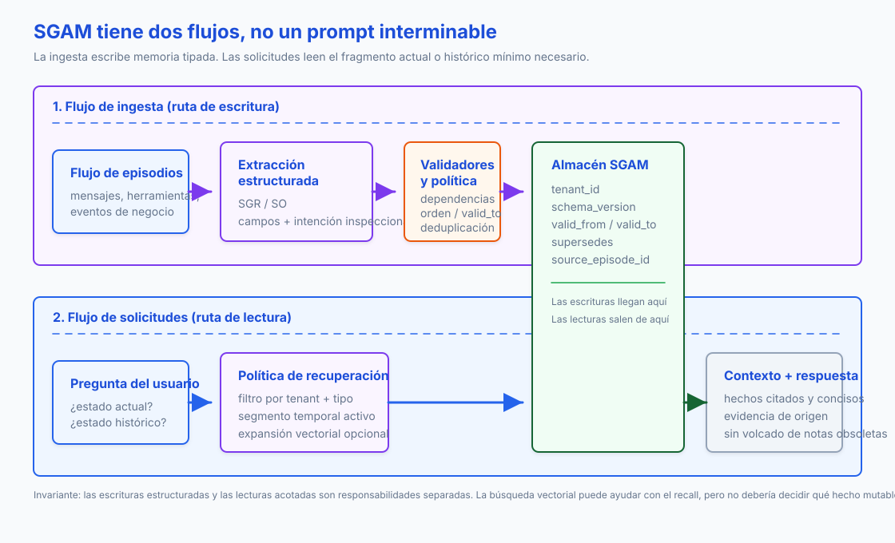

Traducción automática
Este artículo se tradujo automáticamente a partir de la versión original en inglés.
Memoria del agente de IA: Estado tipado guiado por esquemas para sistemas de ejecución prolongada
Los agentes rara vez fallan porque se olviden de todo. Fallan porque recuerdan un dato antiguo y lo tratan como estado actual.
Imaginemos a un asistente de ejecución prolongada al servicio de una usuario llamada Mira. En una conversación, Mira indica que la fecha límite de su pasaporte es el 15 de julio. Más tarde, corrige esa información a el 30 de junio. Un hallazgo basado en vectores puede localizar esa nota antigua. Sin embargo, no puede determinar por sí solo cuál es la fecha límite actual. Esa es la diferencia entre la recuperación de información y la verdadera memoria.
TL;DR: Trata la memoria duradera del agente como un estado de aplicación tipado. Extrae los candidatos a almacenar mediante un límite de salida estructurada, almacena los registros con ámbito de tenant, ventanas de validez, mecanismos de sustitución, información de origen y versionado de esquemas, y luego recupera la porción más reciente en el camino de lectura. La búsqueda vectorial puede permanecer dentro del sistema; no debe ser la fuente autorizada para los datos mutables.
La trampa de la ventana de contexto
La ventana de contexto es un conjunto de trabajo. No es memoria duradera, ni tampoco es una base de datos.
Los agentes que operan durante mucho tiempo necesitan recordar preferencias, estado de tareas, datos de clientes, decisiones sobre herramientas, notas de cumplimiento y errores anteriores. La solución sencilla consiste en añadir resúmenes o guardar las notas antiguas en un almacén vectorial. Esto funciona hasta que uno de los datos recordados cambia.
Ahora el agente tiene dos fechas límite de vencimiento, dos formatos preferidos o dos decisiones relacionadas con proyectos. La búsqueda semántica podría recuperar ambos datos. Un resumen podría sobrescribir uno de ellos. Un contexto extenso podría incluir el dato obsoleto junto al actual. Ninguno de estos comportamientos ofrece un contrato de memoria estable.
El contrato debe responder a preguntas concretas:
- ¿Qué es cierto ahora?
- ¿Qué era cierto el 2 de junio?
- ¿Quién lo dijo?
- ¿A qué inquilino pertenece?
- ¿Qué hecho anterior reemplaza este?
- ¿Puedo eliminarlo o hacer que caduque?
Ahí es donde comienza la Schema-Guided Agent Memory (SGAM).
Qué significa SGAM
Es necesario simplificar un poco el nombre antes de que la arquitectura tenga sentido.
Schema-Guided Dialogue (SGD) es el conjunto de datos de diálogos orientados a tareas de Google del año 2019. Su esquema describe las API de servicios, las intenciones y los campos, de modo que un modelo de diálogo pueda mantener el estado de servicios que no ha visto anteriormente. Un precedente útil, pero en una capa diferente.
Schema-Guided Memory (SGM) es el término de investigación utilizado por Mei y colaboradores en According to Me: Long-Term Personalized Referential Memory QA. En dicho artículo se compara la Memoria Descriptiva (DM) de texto libre con los elementos de memoria clave-valor de esquema fijo. La información de origen es la misma; solo cambia la forma de representación.
Schema-Guided Agent Memory (SGAM) es el patrón de ingeniería al que se refiere este artículo: utilizar esquemas para gestionar las escrituras, actualizaciones, recuperaciones y eliminaciones de la memoria duradera de los agentes. El esquema no es simplemente un formato más atractivo para anotar datos; es el contrato que define el estado.
ATM-Bench hace que esta motivación sea concreta. Utiliza aproximadamente cuatro años de datos de memoria personal extraídos de correos electrónicos, imágenes y videos, y luego plantea preguntas que requieren referencias personales, conocimiento de ubicación, múltiples elementos de evidencia y actualizaciones a lo largo del tiempo. Los sistemas de memoria actuales rinden mal en este escenario complejo, mientras que SGM supera a DM gracias a que campos como el tiempo, la fuente, la ubicación, las entidades y las etiquetas están disponibles para el recuperador y el respondiente en formato estructurado en lugar de texto descriptivo.
Por eso, la siguiente comparación es entre SGAM y SGR. El Razonamiento Guiado por Esquemas no es un desvío aleatorio; representa precisamente la “puerta de escritura” que SGAM suele necesitar.
SGR es la puerta de escritura
Razonamiento Guiado por Esquemas (SGR) y Memoria de Agente Guiada por Esquemas (SGAM) resuelven partes diferentes del mismo problema de producción.
He utilizado SGR como elemento reutilizable en este blog. La versión original Artículo sobre vLLM y XGrammar explicó el mecanismo. En publicaciones posteriores se aplicó a jueces estructurados, planificadores y enrutadores, y rúbricas reproducibles para RAG. En todos esos casos, SGR restringió la llamada de modo que la respuesta fuera lo suficientemente válida como para ser procesada por el código.
SGR restringe una sola llamada al modelo. Obliga al modelo a generar un objeto válido para el paso de inferencia actual, generalmente mediante Pydantic, JSON Schema, formatos estructurados propios del proveedor, o un entorno de decodificación guiado como XGrammar.
SGAM decide qué ocurre una vez que ese objeto existe. ¿Debería guardarse? ¿Sustituye a un dato anterior? ¿Qué usuario puede verlo? ¿Es actual o histórico? ¿Qué episodio de la fuente lo respalda?
| Dimensión | SGR | SGAM |
|---|---|---|
| Ámbito | Un paso de inferencia o una llamada a la herramienta | Ciclo de vida de la memoria duradera |
| Formato | Pydantic o JSON Schema para la llamada | Registros tipados, esquemas y relaciones |
| Aplicación de normas | Salida estructurada o restricciones en el tiempo de decodificación | Validación, restricciones de la base de datos, reglas de conflicto |
| Vida útil | Por lo general, se descarta después de la respuesta. | Se mantiene entre sesiones y se ejecuta |
| Modo de fallo | Extracción inválida o semanticamente débil | Estado obsoleto, contaminado, sin alcance definido o imposible de auditar |
El patrón es:
structured extraction on write -> typed memory at rest -> scoped retrieval on read
SGR garantiza que la extracción sea lo suficientemente fiable como para ser almacenada en memoria. SGAM asegura que dicha memoria sea lo suficientemente segura como para poder reutilizarse posteriormente.
from datetime import datetime
from pydantic import BaseModel, Field
class MemoryDelta(BaseModel):
tenant_id: str = Field(description="Isolation boundary, e.g. acme")
subject: str = Field(description="Normalized entity ID, e.g. mira")
attribute: str = Field(description="Property being updated")
value: str = Field(description="New value")
valid_from: datetime
source_episode_id: str
Ese objeto no es el sistema de memoria. Se trata del límite entre una conversación desorganizada y el registro de memoria.
Los dos flujos
El flujo de trabajo consta de dos rutas independientes. Mezclarlas es la causa por la que los diagramas se vuelven caóticos y difíciles de entender.
El flujo de ingestión corresponde a la ruta de escritura:
- Capturar un episodio en bruto a partir de mensajes, resultados de herramientas o eventos empresariales.
- Extraer candidatos estructurados a través de una salida organizada.
- Validar el esquema y rechazar las entradas con formato incorrecto.
- Resolver conflictos, cerrar datos obsoletos y conservar la información de origen.
- Guardar el registro en el almacén SGAM.
El flujo de solicitud corresponde a la ruta de lectura:
- Partir de la pregunta del usuario.
- Determinar si se necesita el estado actual o el estado en un momento específico.
- Filtrar según el arrendatario, tipo de memoria, tema, atributo y ventana de validez.
- Aplicar expansión vectorial o gráfica únicamente cuando la búsqueda del estado exacto no sea suficiente.
- Compilar el contexto más reducido posible para que lo utilice el modelo.

Lee ese diagrama de izquierda a derecha en dos canales. El canal superior escribe en la memoria. El canal inferior lee de la memoria. La memoria compartida es la misma, pero las responsabilidades no lo son.
Qué debe incluirse en un esquema de memoria
Un registro SGAM mínimo necesita más que text.
tenant_id
memory_id
subject
attribute
value
memory_type
schema_version
valid_from
valid_to
supersedes_memory_id
source_episode_id
confidence
retention_policy
esa forma hace que las operaciones habituales sean explícitas. Un nuevo plazo de vencimiento del pasaporte puede invalidar al anterior sin borrar el historial. Una consulta puede solicitar el estado actual o el estado en un momento concreto. Una respuesta puede hacer referencia al episodio de origen. Una migración puede determinar qué versión del esquema generó un registro. Un flujo de eliminación puede saber qué índices necesitan ser limpiados. Aquí es donde SGAM y RAG difieren: RAG se encarga de recuperar documentos, mientras que SGAM gestiona el estado.
SGAM no es anti-vectorial. Los vectores son útiles para la recuperación difusa, el clustering y la expansión. Pero el valor actual de mira.passport_deadline Debe provenir de un registro de memoria delimitado, y no del primer fragmento que resulte estar en la cima de la jerarquía.
Un ejemplo de dato obsoleto
La demostración más sencilla y útil de SGAM es un libro mayor para ese ejemplo de Mira que cuenta con dos episodios.
e1: Mira prefers concise answers. Her passport deadline is 2026-07-15.
e2: Mira corrected the deadline. It is now 2026-06-30.
Una búsqueda en memoria de texto puede devolver e1 porque contiene las palabras adecuadas. Una tienda tipada debería devolver e2 para el estado actual y mantenerlo e1 Para una consulta histórica.
El comportamiento en el lado de escritura es mínimo:
def close_previous_fact(db: sqlite3.Connection, fact: MemoryFact) -> int | None:
row = db.execute(
"""
select fact_id
from memory_facts
where tenant_id = ?
and subject = ?
and attribute = ?
and valid_to is null
order by valid_from desc
limit 1
""",
(fact.tenant_id, fact.subject, fact.attribute),
).fetchone()
if not row:
return None
db.execute(
"update memory_facts set valid_to = ? where fact_id = ?",
(fact.valid_from, row["fact_id"]),
)
return int(row["fact_id"])
El comportamiento esperado es precisamente el punto clave.
Naive text memory:
returned episode: e1 -> passport deadline is 2026-07-15
SGAM current state:
mira.passport_deadline = 2026-06-30
valid_from=2026-06-03T10:00:00Z, source=e2
SGAM point-in-time state:
on 2026-06-02, mira.passport_deadline = 2026-07-15
En producción, se debe combinar esta transacción con una extracción estructurada en el camino de escritura. De este modo, la base de datos elimina los estados obsoletos. El modelo no deberá tener que adivinar qué nota antigua sigue siendo válida.
| Herramienta o framework | Capa de almacenamiento principal | Gestión temporal | Mecanismo de esquema | Nicho práctico |
|---|---|---|---|---|
| Zep / Graphiti | Soporte para Neo4j, FalkorDB, Neptune y la versión heredada de Kuzu | Alto | Entidad Pydantic y tipos de aristas, aristas temporales, procedencia | Memoria de grafo temporal |
| LangGraph / LangMem | Almacenes de LangGraph, almacenes respaldados por Postgres | Mediano | JSON almacena perfiles de Pydantic o extracción de colecciones | Aplicaciones de agente ya desarrolladas con LangGraph |
| Mem0 | Stack gestionado, servidores backend Valkey / Redis / vector en entornos OSS | Mediano | Tipos de memoria, categorías personalizadas, prompts de extracción | Memoria de usuario, agente y sesión como servicio |
| Letta / MemGPT | Estado del agente y bloques de memoria respaldados por base de datos | Bajo | Bloques de memoria etiquetados editables | Agentes con estado que disponen de gestión de contexto al estilo del sistema operativo |
| Cognee | Backend de grafos, vectores y relaciones | Mediano | Extracción y validación orientadas a ontologías | Memoria del grafo de conocimiento empresarial |
| Gráfico de propiedades de LlamaIndex | Almacenes de gráficos de propiedades más almacenes vectoriales | Bajo a medio | SchemaLLMPathExtractor con entidades y relaciones permitidas |
Extracción de grafos a partir de documentos y trazas |
Graphiti es la referencia de código abierto más clara cuando se trabaja con memorias de tipo relacional y temporal. Permite hacer un seguimiento de los hechos a medida que cambian, mantiene el historial de origen de dichos hechos y admite búsquedas híbridas. LangGraph resulta útil en la capa de aplicación, ya que separa los puntos de control de cada hilo de ejecución de los almacenes compartidos entre hilos. Mem0 es una opción adecuada si se prefieren operaciones de memoria gestionadas en lugar de tener que gestionar todo el sistema de almacenamiento por uno mismo. Letta está más orientada a bloques de contexto editables que a sistemas SGAM a nivel de campo, pero su enfoque basado en agentes con estado resulta igualmente relevante.
No empieces con el gráfico más sofisticado a menos que el dominio lo requiera. Para muchos equipos, una tabla relacional con cargas JSON, columnas de validez, índices por tenant y un sidecar vectorial es suficiente para la primera versión.
Guía de implementación
La primera decisión de implementación no es “¿almacén de grafos o vectorial?”, sino qué es lo que el producto está autorizado a recordar.
Un agente de soporte puede recordar el nivel de la cuenta, los casos abiertos y las preferencias de contacto duraderas. No debe pasar automáticamente a un estado de perfil a todo usuario frustrado. Un agente de programación puede recordar las convenciones del repositorio y las tareas sin resolver. No debe conservar una nota privada indefinidamente solo porque esa nota fue consultada una vez.
Comience con el proceso de escritura y trate la memoria como una pequeña mutación de estado:
- Asigne un nombre al tipo de memoria, al tema, al ámbito del cliente y a la clase de retención.
- Extraiga los registros candidatos con una salida estructurada.
- Valide la carga con Pydantic o con la capa de esquemas que ya utilice su stack.
- Resuelva conflictos antes de realizar la inserción, incluyendo determinar si el nuevo registro sustituye a uno antiguo.
- Guarde un puntero de origen al episodio original, al resultado de la herramienta, al archivo, a la solicitud o a la confirmación del usuario que generó el registro.
- Incluya la versión del esquema junto con el registro, no solo en el código de la aplicación.
Para muchos equipos, el primer almacenamiento SGAM puede ser una tabla relacional con una columna JSON y algunos índices. No es necesario comenzar con un grafo de conocimiento temporal. El grafo resulta útil cuando las relaciones son importantes: cliente-cuenta, cuenta-política, tarea-artefacto, usuario-preferencia, proyecto-Decisión.
Ruta rápida y escrituras en segundo plano
La extracción inmediata merece la pena cuando el siguiente paso depende de la nueva memoria. Si el usuario dice “recuerda que prefiero respuestas cortas”, el sistema no necesita una tarea nocturna para comportarse de forma diferente.
La mayoría de las interacciones no son así. La opción más económica por defecto consiste en escribir rápidamente el episodio en bruto, adjuntar metadatos del inquilino/sesión/herramienta y dejar que un proceso en segundo plano extraiga posteriormente memorias candidatas. La consolidación basada en la recurrencia es una versión de esa política: se almacenan temporalmente las interacciones con poca información relevante y se presenta un hecho solo cuando aparecen pruebas similares o el usuario lo confirma explícitamente. El compromiso es un retraso en la actualidad de la información. Esto es aceptable en casos como “el usuario solicita con frecuencia exportaciones en CSV”, pero menos en situaciones como “el cliente cambió la dirección de entrega”.
La ruta de lectura debería ser menos compleja que la de escritura. Primero responder “¿en qué estado estoy autorizado a usarlo?”. Luego preguntar si la recuperación difusa puede aportar contexto útil.
- Filtrar por inquilino, tipo de memoria y ventana de validez.
- Obtener primero el estado estructurado exacto y luego los vecinos semánticos.
- Utilizar expansión vectorial o gráfica para obtener pruebas complementarias, entidades relacionadas y ejemplos, pero no como fuente autorizada de los hechos actuales.
- Componer el contexto más reducido posible que permita responder a la pregunta.
Tratar la migración de esquemas como parte del trabajo del producto. Cuando un registro de memoria cambia de estructura, también cambia el comportamiento del agente: qué puede recordar, qué puede citar, qué puede eliminar y qué hechos antiguos siguen considerándose actuales. Mantener los scripts de migración, las actualizaciones retroactivas, las ventanas de lectura dual y el comportamiento de eliminación dentro del mismo plan de lanzamiento que el cambio del producto.
¿Dónde gana rentabilidad SGAM?
SGAM es una opción adecuada cuando la memoria tiene estado y cambia con el tiempo:
- Preferencias de usuario que pueden actualizarse o revocarse;
- Datos del cliente o de la cuenta con requisitos de auditoría;
- Estado de las tareas en asistentes de ejecución prolongada;
- Memoria del proyecto del agente de codificación;
- Estado compartido entre múltiples agentes;
- Notas de cumplimiento en los casos en que sea importante el origen de los datos;
- Preguntas temporales como “¿qué creíamos antes de la migración?”
Es un exceso cuando la memoria es de corta duración, tiene un carácter exploratorio o su recálculo es económico. Si el agente solo necesita unos pocos pasos de continuidad, un punto de control y un historial de mensajes reducido son suficientes. Si la tarea consiste en la verificación de documentos estáticos, RAG puede ser adecuado. Si su esquema cambia todos los días porque el dominio sigue siendo vago, SGAM ralentizará su trabajo.
Lista de verificación de evaluación
No evalúe la memoria únicamente leyendo la respuesta final. Un sistema de memoria puede responder de manera educada aun cuando haya escrito un dato incorrecto, haya recuperado uno obsoleto o haya cruzado los límites de un tenant en el proceso.
La estructura es similar a la división de evaluación que utilizo en mi Artículo de evaluación de RAG: mida la etapa del pipeline donde puede producirse el fallo, y no solo el texto generado al final. Esto también coincide con los principios de trazabilidad provenientes de el artículo de evaluación de agentes: un error de memoria suele ser visible en el historial de ejecución antes de que aparezca en la respuesta.
Para SGAM, la prueba más eficaz es la reproducción. Se introduce una secuencia fija de episodios en el escritor de memoria, se inspecciona el registro tras cada turno relevante y, a continuación, se formulan consultas sobre el estado actual y el momento específico basadas en el almacenamiento resultante.
| Capa | El fallo que estás buscando | Medidas |
|---|---|---|
| Escribe la extracción | El agente omitió un hecho, inventó uno o generó una forma inválida. | Tasa de escritura válida según el esquema, precisión/recuperación en la extracción, cobertura de episodios de origen |
| Gestión de conflictos | Un dato obsoleto siguió siendo considerado actual, o bien un dato antiguo válido fue sobrescrito. | Exactitud en la supresión, tasa de duplicados, exactitud en la invalidación de hechos obsoletos |
| Aislamiento y políticas | Fuga de memoria entre usuarios o persistencia más allá del período establecido por la política. | Fallos en el aislamiento de inquilinos, corrección en la eliminación, cumplimiento de políticas de retención |
| Recuperación de lecturas | El registro correcto existe, pero el lector no lo recuperó. | Precisión en estado actual, precisión en un momento específico, tasa de recuperación@k sobre los registros de memoria |
| Respuesta de anclaje | La respuesta utilizó memoria sin soporte adecuado o citó la fuente incorrecta. | Solicitar soporte relacionado con los episodios de origen, la precisión de las citaciones y la corrección en la resolución de conflictos. |
| Operaciones | La ruta de memoria es demasiado lenta, está demasiado desactualizada o tiene un costo excesivo. | p95 de latencia de escritura, retraso en la actualización de los datos, latencia de lectura, costo por consulta |
Benchmarks como por ejemplo LoCoMo, LongMemEval, y ATM-Bench Proporcione señales externas útiles. Estas no sustituyen a un conjunto de pruebas de dominio. La memoria se adapta al tipo de carga de trabajo: un asistente de programación, un bot de atención al cliente y un copiloto de cumplimiento requieren esquemas, filtros, reglas de retención y pruebas de fallo diferentes.
Precauciones
SGAM es mi etiqueta para un patrón, no una norma. La industria ya utiliza nombres superpuestos para elementos del mismo espacio de diseño: Memoria de LangGraph y LangMem Hablemos de los almacenes a corto y largo plazo, los perfiles, las colecciones, las escrituras en rutas críticas y los gestores de memoria en segundo plano. Zep Graphiti denomina a la versión en forma de grafo como Gráfico de Contexto Temporal. Letta plantea el sistema como agentes con estado que disponen de bloques de memoria persistente. Mem0 se autodenomina una capa de gestión de memoria. Microsoft Graph RAG, los gráficos de propiedades de LlamaIndex y Cognee emplean el lenguaje de grafos de conocimiento para abordar problemas relacionados con la recuperación de información y la ontología.
Esos nombres no son intercambiables. Algunos sistemas gestionan perfiles de usuario, otros gestionan episodios, algunos construyen contexto gráfico a partir de documentos y otros proporcionan herramientas al agente para que edite su propia memoria. SGAM representa una versión más estricta de este enfoque: cuando la memoria duradera representa el estado actual de la aplicación, es necesario contar con un esquema, mecanismos de validez, trazabilidad, gestión de conflictos, políticas de retención y migración.
La memoria tipada puede seguir siendo errónea. Un esquema facilita la inspección de escrituras incorrectas, pero no las hace fiables. Sigue siendo necesario contar con confianza en la fuente, confirmación por parte del usuario para hechos sensibles, políticas de gestión de conflictos, procedimientos de eliminación y monitoreo.
La migración de esquemas implica trabajo. Una vez que la memoria se convierte en estado, uno es responsable de la gestión de versiones, la rellena de datos antiguos, los registros obsoletos y el comportamiento de eliminación. Ese es el precio que hay que pagar para obtener un estado actual fiable en lugar de un montón de notas plausibles.
Conclusiones clave
- El contexto constituye un conjunto de trabajo. La memoria de los agentes duraderos requiere un contrato de estado independiente.
- SGR y SGAM son complementarios: primero se valida la escritura y, a continuación, se mantiene el ciclo de vida de la memoria tipada en estado inactivo.
- La recuperación vectorial es útil, pero los hechos actuales necesitan información sobre su ámbito de aplicación, validez, posibilidad de sustitución y origen.
- Empiece con un registro de memoria basado en relaciones simples o en JSON antes de recurrir a estructuras gráficas.
- Evalúe la memoria en función de la corrección de las escrituras, la recuperación temporal, el anclaje en datos reales, el aislamiento de usuarios y el comportamiento al eliminarla.
Referencias
- Según mi análisis: QA de memoria referencial personalizada a largo plazo - Artículo de Mei y colaboradores que presenta ATM-Bench y Memoria Guiada por Esquema. Hacia agentes conversacionales multidominio escalables: el conjunto de datos de diálogo guiado por esquemas - Artículo de Rastogi y colaboradores sobre el conjunto de datos SGD. LongMemEval: Evaluación de asistentes de chat basados en memoria interactiva a largo plazo - El benchmark de Wu y colaboradores para las capacidades de memoria a largo plazo. Graphiti: Construye grafos de contexto temporal para agentes de IA
- Zep: Una arquitectura de grafo de conocimiento temporal para la memoria de agentes
- Visión general de la plataforma Mem0
- Mem0: Creación de agentes de IA listos para producción con memoria a largo plazo escalable
- Resumen de la memoria de LangGraph
- Persistencia de LangGraph
- Documentación de LangMem
- Letta: Introducción a los agentes con estado
- Documentación de Microsoft GraphRAG
- LlamaIndex: Uso de un índice de grafo de propiedades
- Documentación de Cognee
- Documentación de validación de modelos Pydantic
- Documentación de Python sqlite3